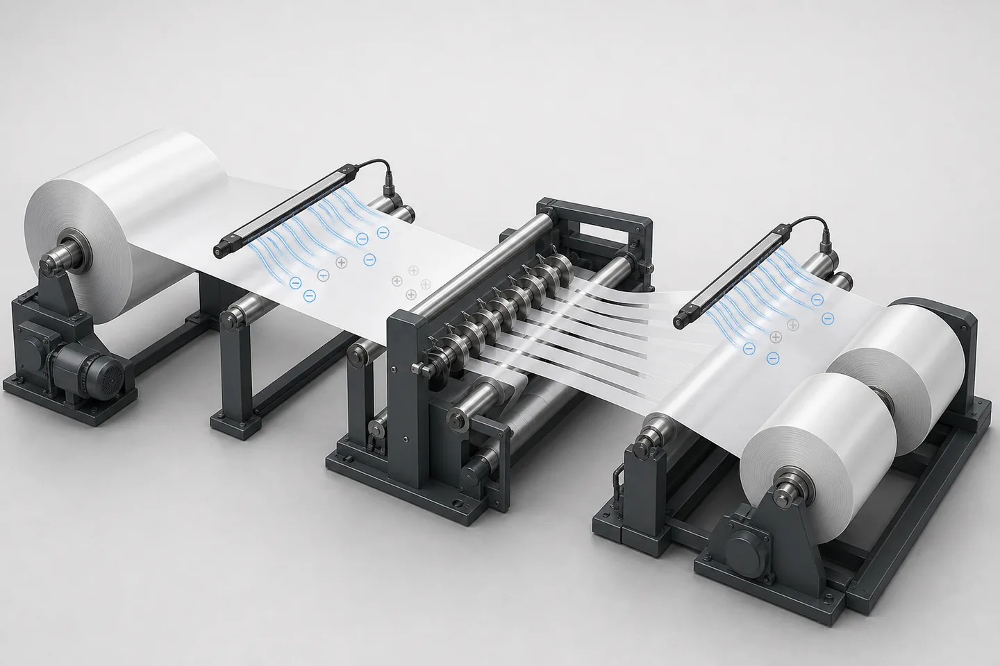

Published July 3, 2026 | By HDPTH Technical Editorial Team

Static problems rarely appear as a neat electrical fault. A converter may first notice dust attracted to film, loose fibers clinging to guards, operators receiving shocks, slit lanes repelling one another, or a finished roll behaving differently after it leaves the machine. The symptom may change with season, speed, coating or parent-roll supplier.
That variability is why a buyer should treat static control as part of the web process. The slitter rewinder, material, atmosphere, cleaning method and downstream operation form one system. A neutralizer selected without that context may work on one trial yet fail when the rewind diameter, line speed or web chemistry changes.
Why static develops during slitting and rewinding
Static charge can be created when two surfaces contact and then separate. On a converting line, that happens as layers peel from a parent roll, the web passes over rollers, narrow lanes separate after slitting and layers build on the rewind. Simco-Ion's static-control basics identifies unwinding and wind-up operations among common charge-generating processes.
Many films, coated papers and synthetic nonwovens are electrical insulators. Charge on the web does not simply disappear because the steel machine frame is earthed. Conductive components should still be properly bonded and grounded, but charge retained on an insulating surface may require ionization or another engineered control at the correct process point.
Speed and geometry change the challenge. A faster web creates less exposure time under a neutralizer. A growing rewind roll changes the distance and angle between a fixed device and the charged surface. Nearby grounded metal, dust deposits and an obstructed airflow can also affect performance. Humidity may influence charge dissipation, but adding humidity is not a universal remedy and may be unsuitable for the product or plant.
Symptoms that justify a static-control review
| Observed Symptom | Possible Static Contribution | What to Verify |
|---|---|---|
| Dust, trim or fibers cling to the web | A charged surface attracts airborne contamination or holds slitting debris. | Measure before cleaning, after slitting and before rewinding; also inspect extraction and housekeeping. |
| Operators feel shocks | Charge may discharge when a person approaches a conductive object or roll. | Record location, recipe, speed and roll diameter; perform a formal electrical and process-safety review. |
| Narrow lanes spread, cling or track unpredictably | Charged lanes can attract or repel nearby surfaces. | Separate static effects from tension, spreading, air entrainment and web-guiding causes. |
| Rewound rolls attract dirt or behave poorly downstream | Residual charge may remain within or on the finished package. | Measure near the winding surface and again after unloading under an agreed procedure. |
| Problems vary by season or material supplier | Ambient conditions and surface formulation may change charge generation and decay. | Log humidity, temperature, material lot, coating and speed with each measurement. |
None of these symptoms proves that static is the only cause. Dust may also indicate ineffective extraction. Lane instability can come from poor tension, wrinkles or an unsuitable spreader. Roll defects can begin with core quality or winding settings. Use measurements and controlled trials before adding hardware.
Choose control points from the web path
After the unwind
Layer separation at the parent roll can generate charge before the web reaches guide, cleaning or inspection devices. A neutralization point after unwinding may reduce attraction of ambient contamination, but it must work across the unwind diameter and web position. Long-range performance, mounting clearance and guard access should be reviewed on the actual layout.
At or after the slitting section
Slitting creates new edges and separates one web into lanes. Meech's slitter application guidance identifies the area after unwinding, the slitting process and rewinding as locations that can require attention. If slitting dust is a concern, coordinate ionization with extraction so loosened particles are captured rather than merely redistributed.
Before and at rewinding
Charge can rebuild after an upstream neutralizer as the web contacts more rolls and winds layer upon layer. A rewind-side device may need to follow a changing roll diameter or operate effectively at a defined range. Its mount must not compromise guarding, threading, roll unloading or maintenance access.
The correct answer may be one control point, several points or none at a particular station. Ask the static-control supplier and machine builder to show the proposed bar type, working distance, active length, cable route, power supply, service access and any feedback sensor on the approved drawing.
Need static-control requirements included in your RFQ?
Send HDPTH your materials, web width, speed range, roll diameters, static symptoms and factory conditions for a project-specific slitting and rewinding discussion.
Discuss Your ApplicationPassive measures, ionization and monitoring
Begin with sound machine bonding, grounding, cable routing and maintenance. These are foundational controls for conductive structures; they are not a substitute for neutralizing an insulating web. Confirm earth connections according to the destination plant's electrical design and applicable requirements.
Ionizing bars produce both polarities so opposite ions can neutralize the surface charge. Selection depends on web speed, distance, material, charge level and environment. A short-range device mounted too far away can underperform. A bar blocked by a roller or coated with dust can lose effectiveness even if its power indicator remains on.
For variable processes, static sensors and controller feedback can provide more useful evidence than a simple on/off signal. Monitoring does not automatically create closed-loop control, however. The quotation should state what is measured, how often, how readings are displayed or logged, and whether the system adjusts output or only reports conditions.
Distinguish neutralization from web cleaning. Ionization can release electrostatically held particles, but those particles still need a controlled removal path. If cleanliness is a purchase driver, define the web cleaner, vacuum extraction, filtration, waste handling and inspection method as well as the neutralizer.
Safety and hazardous-process boundaries
Operator shocks are a reason to investigate, not a performance specification by themselves. A static discharge can also be an ignition source when an ignitable atmosphere or combustible dust hazard exists. The risk depends on the actual material, dust or vapor, concentration, ignition characteristics, equipment classification and plant controls.
OSHA's combustible-dust guidance notes that dry powders can accumulate static during frictional transfer and calls for appropriate precautions such as grounding and bonding. It also emphasizes material-specific hazard evaluation. A slitter-rewinder supplier cannot determine the plant's dust or hazardous-location classification from a web name alone.
Tell bidders about solvents, coatings, residual vapors, combustible fibers or dust, extraction systems and the site's classified areas. Require the plant's safety specialist and qualified electrical engineer to confirm the applicable US, EU or local framework. Do not assume that a standard ionizer, power supply or vacuum is suitable for a classified location.
Static-control devices also require safe mounting. Preserve guards around knives, rotating rolls and nip points. Locate high-voltage cables and power supplies away from damage, contamination and routine operator movement. Define isolation, cleaning and replacement procedures in the manuals and training scope.
RFQ checklist for slitter rewinder static control
- Every substrate, coating, laminate and release liner expected during the contract.
- Thickness or basis weight, conductivity information if known, and surface sensitivity.
- Parent-roll and finished-roll diameters, core sizes and maximum web width.
- Normal, minimum and maximum production speeds for each material family.
- Web-path drawing with rollers, slit point, cleaning, inspection and rewind positions.
- Existing symptoms, where they occur, and photographs or measurements from current production.
- Expected factory temperature and relative-humidity range, including seasonal extremes.
- Dust, fiber, solvent or vapor information and the plant's hazardous-area assessment.
- Required neutralizer active width, working distance and adjustment through roll-diameter changes.
- Static measurement locations, instrument type, reading method and acceptance criteria.
- Monitoring, alarm, communications and data-logging requirements.
- Cleaning frequency, access, spare emitters or bars, and local service expectations.
- Destination voltage, electrical standard, guarding and documentation requirements.
- Representative parent rolls available for supplier trials and FAT.
HDPTH describes its high-speed slitting machines as custom equipment for nonwoven, paper, film and flexible materials. That breadth makes the material schedule essential: a control arrangement for PE film should not be assumed to suit paper or a fibrous nonwoven without review. The applications page can help buyers organize the end-use information that belongs in the inquiry.
Turn FAT into a repeatable static-control test
A factory test should establish a method before it establishes a number. Agree the meter or field sensor, measurement distance, orientation, sample location and machine state. Record temperature and humidity. A reading taken close to a charged web is not comparable with one taken farther away or after the line has stopped for several minutes.
Choose representative recipes: the material known to charge most strongly, the highest contracted speed, a slow-speed or start-stop case, and relevant small and large roll diameters. Run long enough to reach stable process conditions. Record readings before and after neutralization at the same locations, then observe contamination, lane separation, winding and operator access.
Check the complete system rather than only the bar. Verify mounting distance, coverage across full width, power-supply status, sensor output, alarms, permissives and communication to the machine control if contracted. Confirm that guard opening, emergency stop or power interruption produces the documented safe response and that restart does not hide a fault.
Inspect how easily operators can clean the emitter points and verify performance after cleaning. Ask for a baseline record from the accepted setup, including photographs and device settings. Add the static-control evidence to the broader slitter rewinder FAT checklist.
Shipment, installation and commissioning checks
Before packing, photograph brackets, bar orientation, cable routes, power supplies and sensor positions. Mark removed components and protect emitter points from impact and contamination. Put model, active length, cable and spare-part details on the packing list. Back up settings and test records.
At installation, reproduce the approved geometry. A bar shifted to clear a local guard or cable tray may no longer operate at its intended distance. Confirm grounding and bonding, destination power, ventilation, extraction and classified-area requirements before energizing the system.
Commission with production material under normal plant conditions. Repeat the agreed measurement procedure and compare it with FAT records, recognizing that humidity and material lots may differ. Train operators to identify a dirty bar, damaged cable, failed power supply or unusual reading without entering a hazardous machine area.
Common purchasing mistakes
- Requesting “anti-static” without naming the material, symptom or measurement method.
- Assuming machine grounding will neutralize charge held on an insulating web.
- Installing one bar upstream and ignoring charge regenerated at slitting or rewinding.
- Comparing ionizers without checking working distance and exposure time at maximum speed.
- Treating ionization as a replacement for dust extraction or web cleaning.
- Forgetting that rewind diameter changes the neutralizer-to-web geometry.
- Testing only at low speed or with a supplier's convenient material.
- Omitting hazardous-area classification and material safety information from the RFQ.
- Leaving cleaning access, alarms, spare parts and baseline records until commissioning.
Buyer FAQs
Why does static build up on a slitter rewinder?
Charge can be generated when the web contacts and separates from rolls, when layers unwind, at slitting interfaces and as finished layers rewind. Insulating materials such as many plastic films tend to retain charge, while speed, humidity, web path and surface condition influence the result.
Is machine grounding enough to remove static from film or nonwoven?
Grounding conductive machine parts is essential, but it may not neutralize charge held on an insulating web. An engineered system may also need correctly selected and positioned ionization, verified by measurements. Hazardous-process requirements must be assessed separately.
Where should ionizing bars be installed on a slitter rewinder?
Typical assessment points include after unwinding, near the slitting zone and before or at rewinding. Final locations depend on where charge is generated, web speed, bar working distance, surrounding metal, access, contamination and the equipment manufacturer's instructions.
What data should a buyer send when requesting static control?
Send every material and coating, web width, thickness or basis weight, speed range, roll diameters, web-path drawing, ambient range, known static symptoms, cleaning process, hazardous-area classification if applicable and target measurement or acceptance method.
How should static control be checked during FAT?
Test representative materials at agreed speeds and roll diameters, measure at defined locations with a suitable instrument, record ambient conditions, verify alarms and cleaning access, and repeat readings before and after the system operates. Product behavior and safe fault response should also be documented.
Sources
- Simco-Ion: The Basics of Static Control
- Meech: Slitter web cleaning and static-control application
- Meech: Slitter rewinder static-control application
- OSHA: Hazard Communication Guidance for Combustible Dusts
Specify measurable static-control performance
Send your material schedule, web path, operating range, plant conditions and current static symptoms. HDPTH can use the information when reviewing a project-specific slitting and rewinding configuration.
Send Your Machinery RFQ